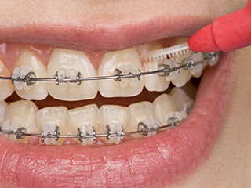
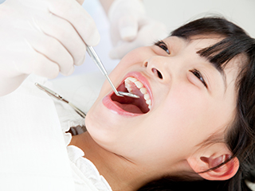
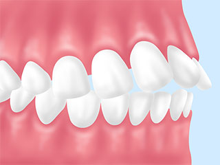
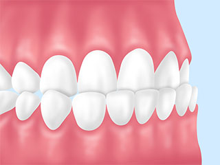
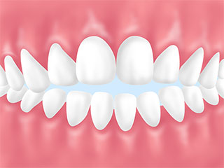
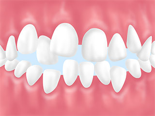
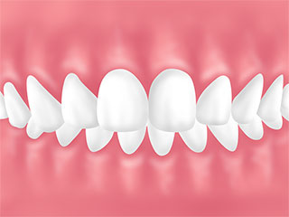
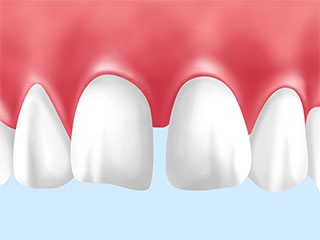
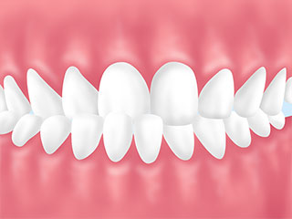
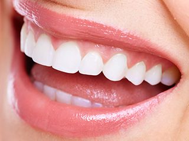

- TOP
- 矯正治療｜矯正治療とは
歯並びや噛み合わせは、見た目だけではなく顎や顔、さらに全身の健康に大きな影響を与えます。矯正治療について詳しく解説します。
Orthodontic見た目だけではなく、
健康や精神面などにも良い影響がある矯正治療

「矯正治療」と聞くと見た目を良くするために行うイメージが強いかもしれません。しかし、歯並びや噛み合わせは、見た目だけではなく顎や顔、さらに全身の健康に大きな影響を与えます。場合によっては、歯並びの乱れが全身の歪みにつながることも。正しく整った歯並びは、心身の健康を支える大切なものなのです。こちらでは、そんな大切な歯並び・噛み合わせを整える矯正治療について詳しく解説します。
もし歯並びや噛み合わせの乱れが気になる場合は、南区道徳の歯医者「名古屋みなみ歯科・矯正歯科」までご相談ください。成人矯正・小児矯正のどちらにも対応可能です。
歯並びの乱れが気になっていませんか？
親知らずを除いた永久歯の数は28本。そのすべてがバランスよく並んでこそ、噛む、発音、表情をつくるといった本来の歯の機能を果たすことができます。歯並びや噛み合わせが乱れていると、歯はこうした機能を十分に果たすことができません。まずは、歯並びの乱れの原因やリスクを知っておきましょう。
歯並びが悪くなる原因とは？

大きな原因となるのは「あごの発育不良」です。顎の骨が健康的に発育した場合は、上顎骨が前方へ成長します。しかし普段の舌の位置や癖といった要因から上顎骨が下方に成長すると、顔の形は細く、縦長に。すべての歯が正しく並ぶためのスペースが足りず、歯並びが乱れる原因となってしまうのです。
歯並びの乱れを放置すると、さまざまなリスクが伴います
| 虫歯・歯周病 | ブラッシングが行き届きにくいため汚れが溜まりやすく、虫歯・歯周病のリスクが高まります。 |
|---|---|
| 発音 | 歯と歯の間の隙間から空気が漏れる、舌の動きが制限されるなどの理由から、発音が不明瞭になることがあります。 |
| 消化 | 食べ物を十分に咀嚼できず、胃腸に負担がかかります。 |
| 全身のバランス | 噛み合わせの乱れは全身バランスの歪みにつながる可能性があり、肩こりや頭痛、腰痛などの原因になることもあります。 |
| 見た目 | 歯並びの乱れによって口元の見た目が気になり、「人前で口を開けられない」「笑いたくない」といったコンプレックスにつながることがあります。 |
このような歯並びではありませんか？
| 上顎前突 | 下顎前突 |
|---|---|
|  |  |
| 上顎全体、または上の歯が前に飛び出している状態。出っ歯とも呼ばれます。 | 下顎全体、または上の歯が前に飛び出している状態。受け口とも呼ばれます。 |
| 開咬 | 切端咬合 |
|---|---|
|  | |
| 奥歯を噛み合わせても、前歯が噛み合わずに隙間ができてしまう状態です。 | 上下の歯の切端同士が噛み合っている状態。歯に大きな負担がかかります。 |
| 叢生 | 過蓋咬合 |
|---|---|
|  |  |
| 歯が凸凹に生えている状態。乱ぐい歯とも呼ばれ、汚れが溜まりやすい歯並びです。 | 噛み合わせが深すぎる状態。上の歯が下の歯に覆いかぶさり、歯茎や粘膜を傷つけやすい噛み合わせです。 |
| 空隙歯列 | 交叉咬合 |
|---|---|
|  |  |
| いわゆる「すきっ歯」の状態。歯と歯の間に隙間があり、食べ物がはさまりやすい噛み合わせです。 | 上下の歯列が一部交叉している状態。正しく咀嚼できず、顔の歪みにつながることもあります。 |
矯正治療の必要性

すべての歯がバランスよく並び、本来の機能をしっかり果たせるように。上記のような歯並び・噛み合わせの乱れを整えるのが矯正治療の目的です。歯並びや噛み合わせが整えば、虫歯・歯周病といったお口の病気だけではなく、全身の歪みや疾患のリスクも軽減。もちろん、歯が正しく並んで本来の機能を無理なく発揮できれば、歯の寿命を延ばすことにもつながります。
矯正治療のメリット
- 出っ歯、すきっ歯、受け口のような歯並びの乱れを整えることで、口元の印象が良くなります
- ブラッシングが行き届きやすくなり、虫歯・歯周病の予防につながります
- 噛み合わせが良くなることで、骨格、顔の歪みが改善されることがあります
- 歯並びや噛み合わせのバランスが整うことで、肩こり・頭痛などの体の不調か改善されることがあります
- 歯と歯の間から空気が漏れるなど、発音にかかわるトラブルが解消されることがあります
- 気になっていた口元の見た目が改善され、コンプレックスの解消につながります
矯正中の食事について
このようにメリットの多い矯正治療ですが、装置をつけている間の生活には注意点もあります。特に注意していただきたいのが食事。食べ方の工夫や食後のケアが必要です。
| 硬い物 | 思い切り噛むと、装置が外れる・壊れるといったトラブルにつながることがあります。 |
|---|---|
| 色が濃い物 | プラスチック製のブラケットは着色の可能性があります。着色が気になる場合は、カレーやキムチのような色の濃い食べ物は控えましょう。 |
| 粘り気が強い物 | お餅やガムなどは矯正装置に付着しやすく、外れる・壊れるといったトラブルの原因になることがあります。 |
| 歯に詰まりやすい物 | スナック菓子など歯に詰まりやすい物を食べた後は、しっかりブラッシングをして汚れを落とすことが大切です。 |